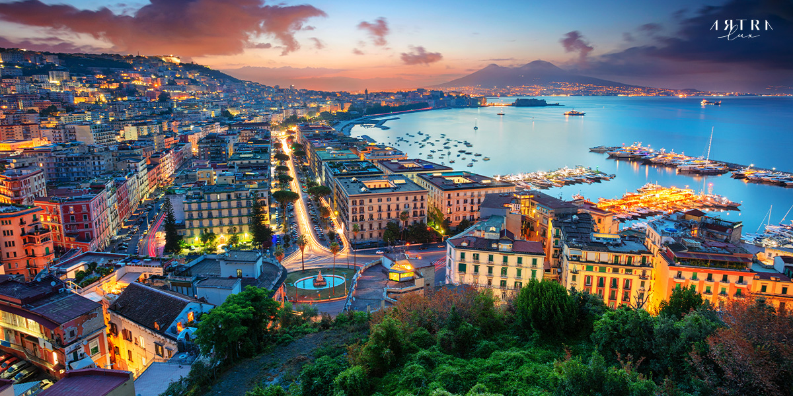
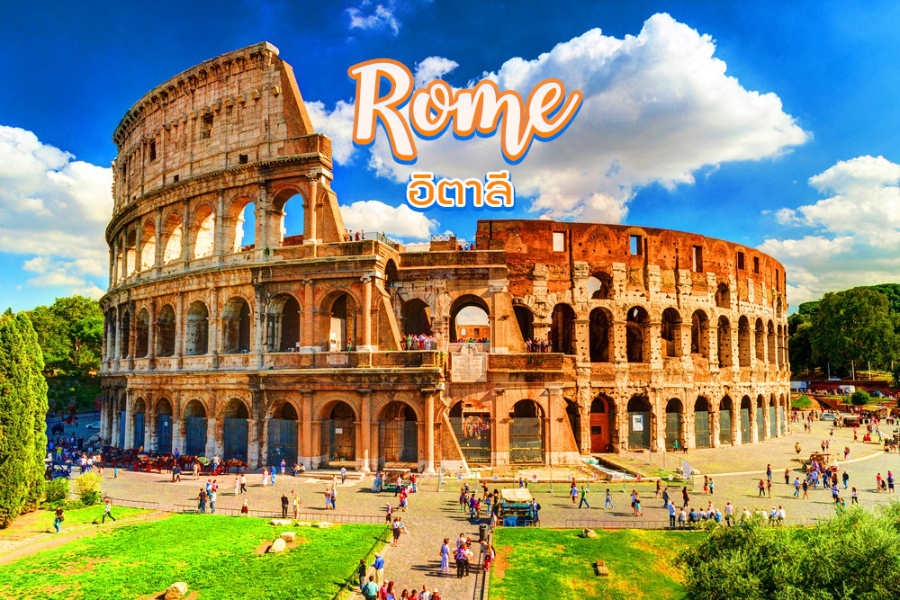
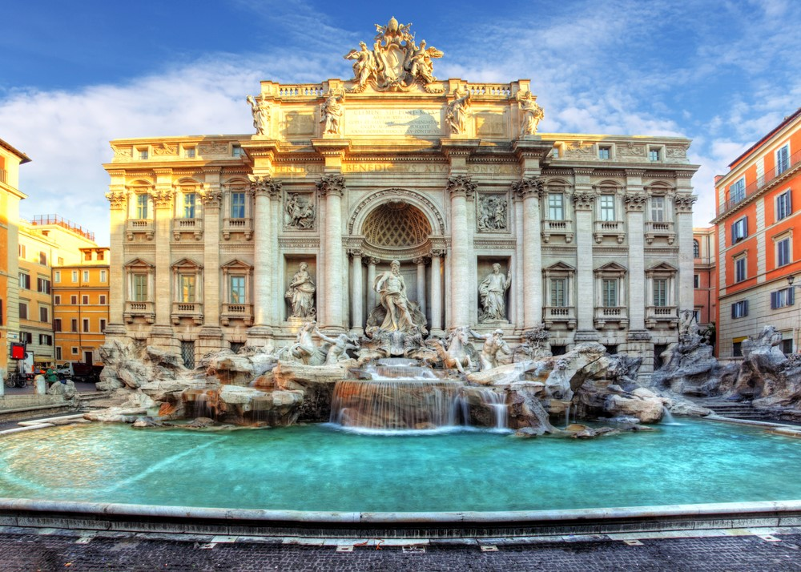
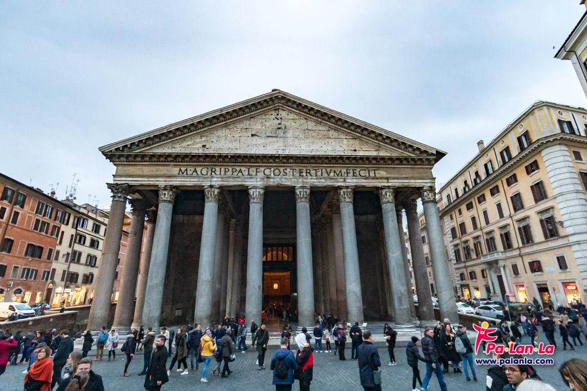
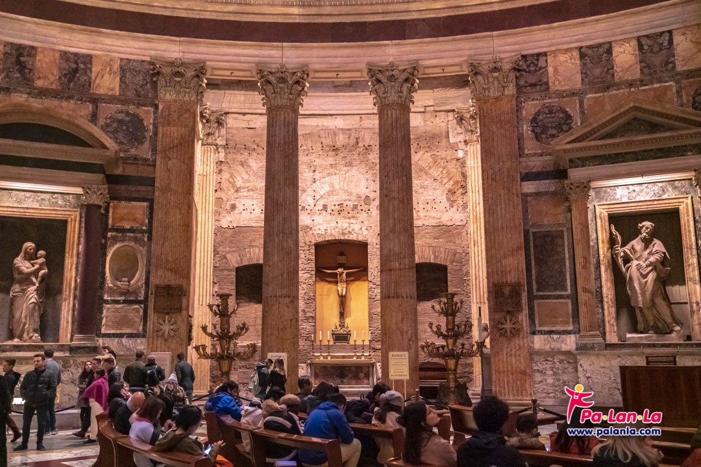
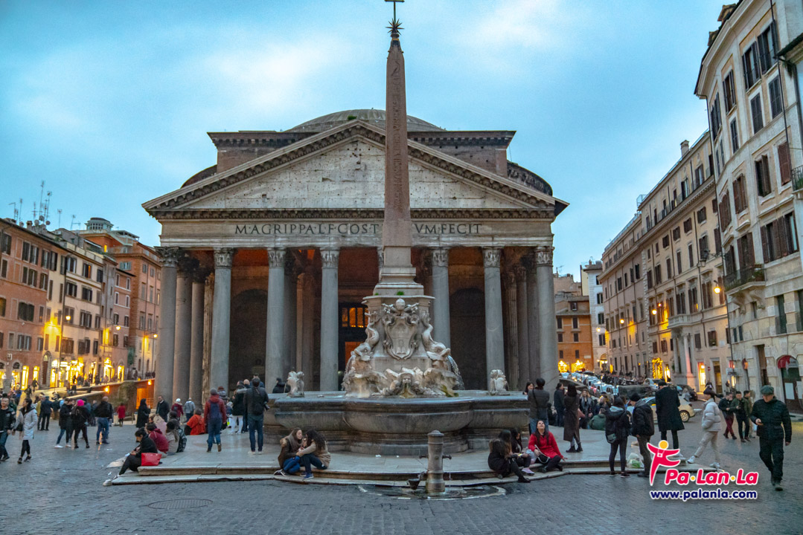

อิตาลี ||
ประวัติประเทศอิตาลี/a> ||
อาหารที่ชอบ ||
สถานที่ท่องเที่ยวในอิตาลี ||
เที่ยวโรม Rome อิตาลี
ทริปเที่ยวโรม อิตาลี กรุงโรมเป็นเมืองหลวงและเมืองที่ใหญ่ที่สุดของแคว้นลาซีโอและประเทศอิตาลีจ้า มีคนอาศัยประมาณ 2.5 ล้านคนแน่ะ ถือเป็นเมืองท่องเที่ยวที่สวยและน่าไปที่สุดอีกเมืองหนึ่งของอิตาลีเลยล่ะค่ะ
มีประวัติศาสตร์ยาวนานมากกว่า 2,800 ปี ทั้งสถาปัตยกรรม ประติมากรรม สถานที่เที่ยวต่างๆ คลุกเคล้าความคลาสสิคสไตล์ยุโรปที่คุณจะต้องหลงเลิฟฟฟ
โคลอสเซียม (Colosseum)
โคลอสเซียม หนึ่งในสิ่งมหัศจรรย์ของโลก เป็นสนามกีฬากลางแจ้งที่ใหญ่โตแอนด์มโหฬารที่สุดในสมัยโบราณค่า สร้างขึ้นในปี ค.ศ.72 โดยจักรพรรดิเวสปาเซียน รูปทรงโค้งเป็นวงกลม ก่อด้วยอิฐและหินขนาดใหญ่ วัดโดยรอบ ยาว 527 เมตร สูง 57 เมตร มี 4 ชั้น จุคนได้ถึงประมาณ 80,000 คนเลยทีเดียวว มีการออกแบบทางระบายน้ำเพื่อไม่ให้น้ำท่วมขังตอนฝนตก ถือเป็นต้นแบบของสนามกีฬาต่างๆ ในปัจจุบันเลยล่ะค่ะ งานที่สร้างในสมัยนั้นแต่ยิ่ง. ใหญ่อลังการขนาดนี้ น่านับถือฝีมือมากๆ


มหาวิหารแพนธีออน (Pantheon)
มหาวิหารแห่งนี้มีอายุกว่า 2,000 ปีค่ะ อู้วววว แค่ดูอายุก็รู้แล้วว่าขลัง แต่เดิมสร้างโดยมาร์คัส วิพซานิอัส อกริพพา (Marcus Vipsanius Agrippa) ใช้เป็นเทวสถานสำหรับเทพต่างๆ ของโรมันโบราณและเป็นคริสต์ศาสนสถานของโรมันคาทอลิก
ต่อมาได้รับการสร้างใหม่ในต้นคริสต์ศตวรรษที่ 2 และก็ยังคงใช้งานกันมาตลอดตั้งแต่สร้างครั้งแรก แต่สภาพยังดีเหมือนเดิมเลย นอกจากกาลเวลาจะไม่สามารถทำให้มหาวิหารแพนธีออนผุพังไปได้แล้ว ยังเป็นสิ่งก่อสร้างจากสมัยโรมันที่คงสภาพสมบูรณ์ที่สุดอีกด้วยค่า แสดงให้เห็นถึงอัจฉริยะในการสรรค์สร้างของสถาปนิกสมัยโบราณจริงๆ.
ความน่าทึ่งนี้เริ่มตั้งแต่เสาหินแกรนิตขนาดยักษ์ด้านหน้าเลยล่ะค่ะ ที่เรียงตัวเป็นแนวยาวเหมือนวิหารกรีก แต่ละเสาทำจากหินก้อนเดียวเลยนะคะ ไม่ได้เอามาต่อกัน ตัววิหารไม่มีเสาค้ำกลางคอยรับน้ำหนักเลยทั้งที่มีขนาดใหญ่โตมากกก มีหลังคาโดมและมีช่องวงกลมขนาดใหญ่ตรงกลางให้แสงผ่านเข้ามา ช่องนี้เรียกว่าช่อง โอคูลุส ซึ่งแปลว่าตาค่ะ สร้างขึ้นเพื่อใช้เป็นนาฬิกาแดดและช่วยส่องแสงสว่างให้กษัตริย์ในอดีตในขณะที่เสด็จมาประกอบพิธีสำคัญๆ ภายในมหาวิหาร.


